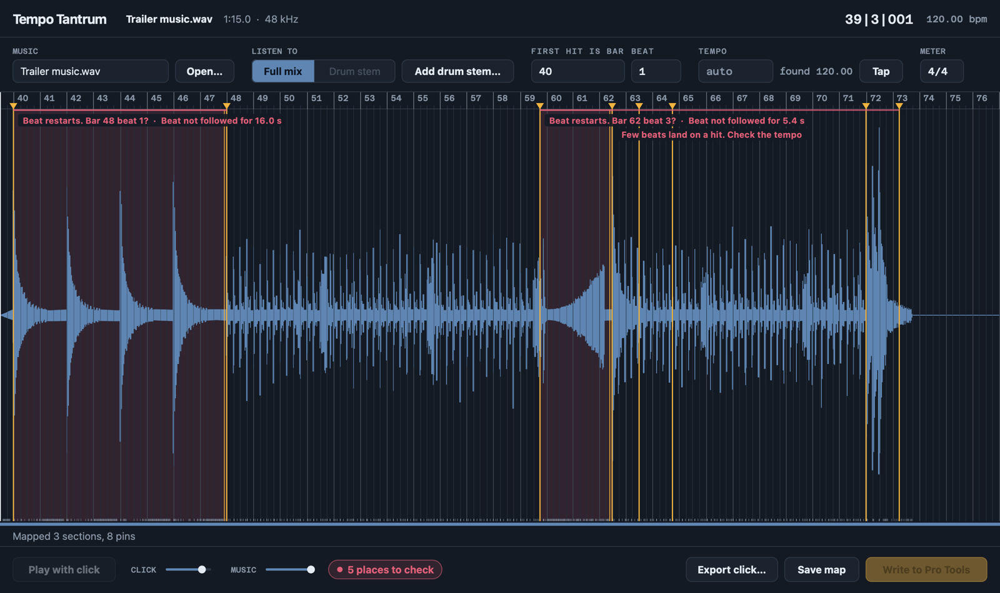
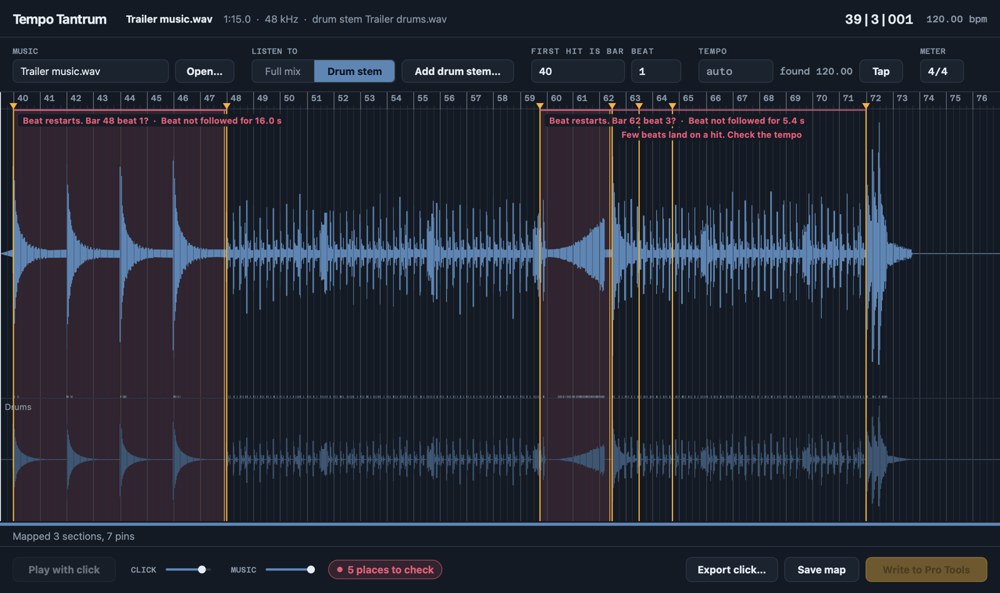

Tempo Tantrum
A Mac app that listens to trailer music, finds the hits and puts a bars and beats grid on them, ready to become a Pro Tools tempo map. This is a test build for the team.
Download
Download for Mac
TempoTantrum-0.1.0-macOS.dmg
Version 0.1.0. macOS 11 or later, Apple silicon and Intel.
Release page
Install
Open the disk image and drag Tempo Tantrum to Applications. Then open it from Applications.
Try this
- Drop the trailer music on the window, or use Open…. It listens straight away and draws the grid and the pins (the amber lines) over the waveform.
- Set First hit is bar and Beat. For a cue that starts on bar 40, set bar 40, beat 1. If it picked the wrong first hit, right-click the right one and choose This is the first hit.

The whole cue mapped from bar 40. The pink notes and the shaded stretches are the places it wants you to check. - Press Play with click or the space bar and listen. The click is louder on beat 1 of each bar.
- Press Tab to jump to the next place to check. It zooms in and loops that stretch with the click. Where the beat comes back after a riser, it guesses the bar. If the guess is right, leave it. If not, right-click the pin and choose This hit is bar…, or right-click the hit and choose The beat restarts here.

A riser and the hit where the beat comes back. It asks whether that hit is bar 48, beat 2. - Drag a pin onto a hit. It snaps to the nearest hit; hold Alt to place it freely. Double-click near a hit to add a pin. The map is worked out again around your pins.
- Press Save map, then Export click…. Lay the click WAV against the music in Pro Tools and listen for where it drifts.

Keys
| Key | What it does |
|---|---|
| Space | Play with the click, or stop. Stops a loop. |
| Tab | Jump to the next place to check and loop it. Shift Tab goes back. |
| Esc | Stop looping and keep playing. |
| T | Tap the tempo. Taps more than two seconds apart start a new count. |
| ← → | Move to the previous or next pin. |
| ⌫ Delete | Delete the selected pin. |
| ⌘O | Open music. |
| ⌘S | Save the map. |
| ⌘Z ⇧⌘Z | Undo, redo. |
While you are typing in a box, Tab moves to the next box and Esc goes back to the keys above.
What it does not do yet
- It does not write the tempo map into Pro Tools. Use the exported click instead.
- A tempo change inside a section is not followed. Between two pins the tempo is constant.
- Single hits placed to picture, away from any beat, are not followed.
- Mac only.
What to tell us
- Where the grid was off the hits, with the bar or the time.
- Where it lost the beat, and whether it asked you to check that place.
- Anything that was slow or confusing.
The saved map helps a lot. It sits next to the music as <music file name>.tempotantrum.json. Send it to Sam.
Tempo Tantrum 0.1.0 · an app by Samuel Justice · Sammy J · README on GitHub